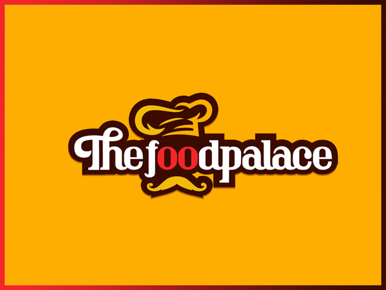
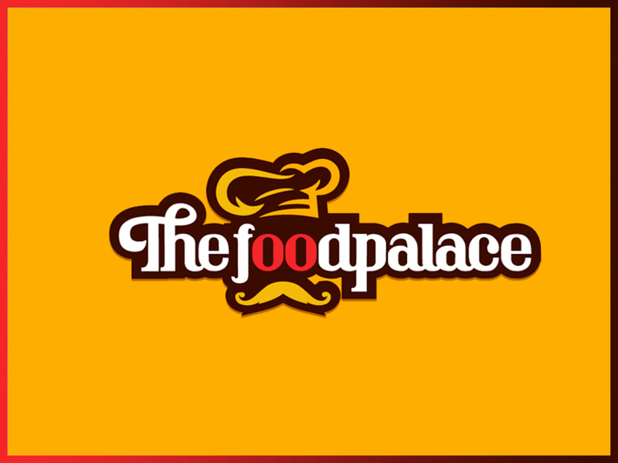

WELCOME TO THE FOOD PALACE
Tasty &
Fresh Food
Flavour-filled
Menu
EGUSI SOUP

#2800
Egusi is a west African staple soup rich in fat, protein, and essential nutrients. It is particularly common in Nigeria because of its delicious match with pounded yam. The melon seed, which is the main ingredient, is derived from the melon plant in the same family as squash and gourds.It is an exotic hearty food that will satisfy your taste buds. It is a staple in most West African homes.
OGBONO SOUP
#2600
Ogbono soup is a delectable Nigerian concoction soup and its super easy to prepare. Its a thick and hearty stew made with Ogbono seeds (wild mango seeds) loaded with meats and fish simmered in a light delicious broth.When Ogbono is cooked it has a mucilaginous (slimy) texture like cooked Okra and Jute leaves (Ewedu). This is a stew and not a soup in the real sense but we call it soup anyways.
JELLOF RICE

#2400
Jollof rice is a staple in West African cuisine. Its made from rice, tomatoes, onions, peppers, and other seasonings. The dish is cooked in one pot. Its simple and easy to make at home and the end result is absolutely delicious.Jollof rice is a delicious royal dish originating in West Africa. It is one of the most common West African dishes eaten in the regions of Nigeria, Ghana, Togo, Senegal, Gambia, Mali, Sierra Leone, Ivory Coast, Cameroun, and Liberia.
About us

THE FOOD PALACE
The food palace esterblished in the year 1901 is a place of delicious and tantalizing food. Both continental and local dishes are available for your nourishment and enjoyment, we have you covered on your choice of food. We deliver to your doorstep when you order online. You can try us today and see why we are regarded as the best.
FOOD PALACE | RESTAURANT
- Restaurant
- Local/ Continental
- Eat in/ Take out
- Outdoor Catering Services
- Events Catering
We are glad to have you here
EGUSI SOUP
#2800
Egusi is a west African staple soup rich in fat, protein, and essential nutrients. It is particularly common in Nigeria because of its delicious match with pounded yam. The melon seed, which is the main ingredient, is derived from the melon plant in the same family as squash and gourds.It is an exotic hearty food that will satisfy your taste buds. It is a staple in most West African homes.
OGBONO SOUP
#2600
Ogbono soup is a delectable Nigerian concoction soup and its super easy to prepare. Its a thick and hearty stew made with Ogbono seeds (wild mango seeds) loaded with meats and fish simmered in a light delicious broth.When Ogbono is cooked it has a mucilaginous (slimy) texture like cooked Okra and Jute leaves (Ewedu). This is a stew and not a soup in the real sense but we call it soup anyways.
JELLOF RICE
#2400
Jollof rice is a staple in West African cuisine. Its made from rice, tomatoes, onions, peppers, and other seasonings. The dish is cooked in one pot. Its simple and easy to make at home and the end result is absolutely delicious.Jollof rice is a delicious royal dish originating in West Africa. It is one of the most common West African dishes eaten in the regions of Nigeria, Ghana, Togo, Senegal, Gambia, Mali, Sierra Leone, Ivory Coast, Cameroun, and Liberia.
About us
THE FOOD PALACE
The food palace esterblished in the year 1901 is a place of delicious and tantalizing food. Both continental and local dishes are available for your nourishment and enjoyment, we have you covered on your choice of food. We deliver to your doorstep when you order online. You can try us today and see why we are regarded as the best.
-
FOOD PALACE | RESTAURANT
- Restaurant
- Local/ Continental
- Eat in/ Take out
- Outdoor Catering Services
- Events Catering